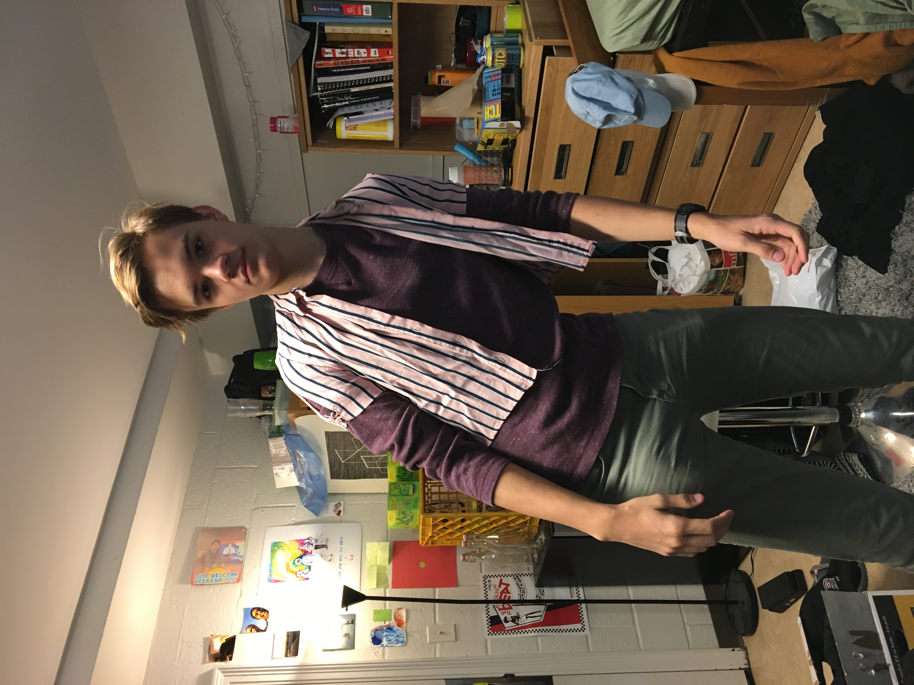

Adaeze - Dough Specialist
With over 625 years of experience in dough exploration, Adaeze knows her batter! Before joining the team, Adaeze spent more than half a millenium and visited 5,462 countries diligently searching for the perfect mix that we use as the base for all of our cookies!
Spencer - Founder

Spencer's love for sweet treats is deep rooted. Growing up in the famed 123 Sesame Street, Spencer's grandfather (commonly known as "The Cookie Monster") instilled in him a deep love and reverence for the cookie. His dreams came true when he met the rest of our team and opened the first "Cookies^2" location in 30,000 BC!
Tim - Custodian
Tim cleans the ovens and sweeps the cookie crumbs with all his heart!
Will - Exploratory Topping Expert
If noone has the will to chase after the best toppings on Earth, Will will be willing! Once he invented the chocaloate chip cookie, made a fortune, and went into retirement for 1,252,560 months, he found that his fire and passion for cookies would never die. He then sanctioned a worldwide search for new toppings that had not yet be discovered, many of which he patented and we serve today!